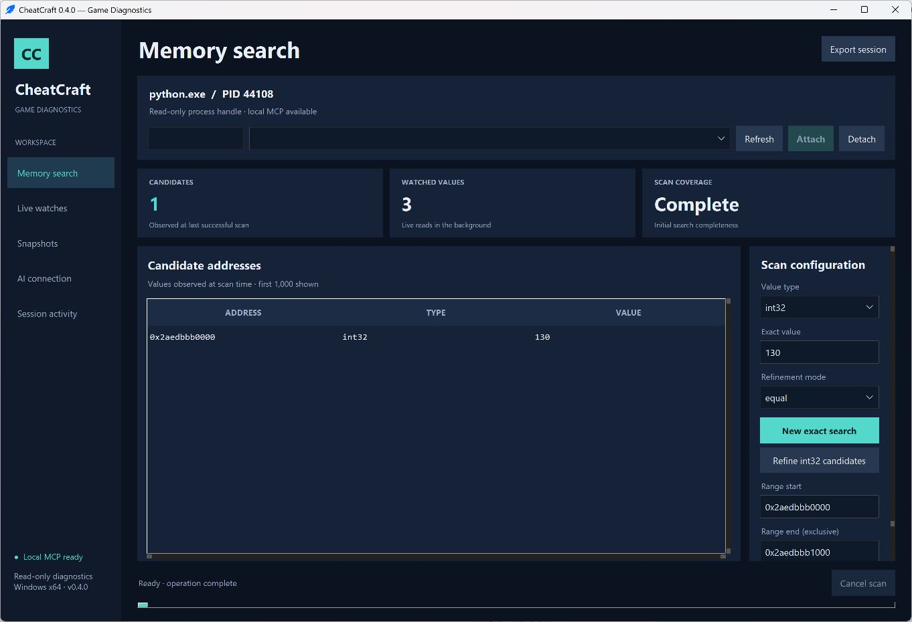

Pesquise com precisão
Pesquise valores por tipo e filtre os candidatos conforme o estado muda.
Um espaço local no Windows para pesquisar memória, acompanhar valores e comparar instantâneos. Conecte seu cliente de IA pelo MCP.
Para desenvolvedores de jogos e testadores técnicos.
Gratuito e de código aberto · MIT

Pesquise valores por tipo e filtre os candidatos conforme o estado muda.
Monitore endereços selecionados e compare instantâneos nomeados.
Conecte um cliente MCP à mesma sessão selecionada no aplicativo.
A interface, a descoberta de processos e a integração de IA usam bibliotecas existentes. A leitura de memória usa APIs documentadas do Windows.
DocumentaçãoA versão 0.4.0 é uma prévia do código-fonte e requer Python. O executável sem assinatura não é distribuído porque sua inicialização foi bloqueada na validação local.
Baixar prévia do códigoWindows x64 e Python de 64 bits, versão 3.11 ou posterior, com Tcl/Tk. Baixe o código, execute Setup.cmd e depois Launch.cmd. A verificação local usa Python 3.14.7.
Processos próprios ou que você tenha permissão para inspecionar, quando o Windows conceder acesso de leitura. O CheatCraft não contorna sistemas antitrapaça nem proteções de processos.